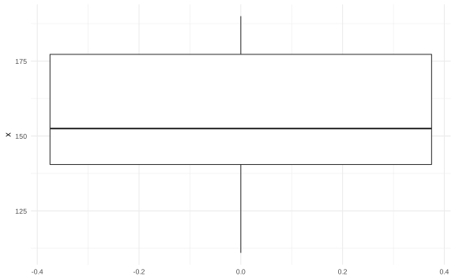
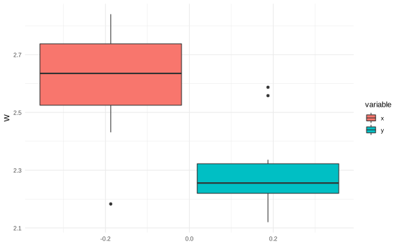

Capítulo 16 Pruebas no-paramétricas: pruebas de signo y rango
En este capítulo se explorará como hacer hipótesis sobre la distribución de un conjunto de datos cuando no se sabe con exactitud la distribución teórica a la cual pertenece.
16.1 Prueba de signo
Sean \(X_1,\dots,X_n\) una muestra aleatoria de una distribución desconocida continua. Recordemos que no toda distribución tiene media, por ejemplo la distribución Cauchy3. Sin embargo, toda distribución continua si tiene una mediana \(\mu\)4 definida.
La mediana es una popular medida de ubicación, que satisface
\[\mathbb P(X_i\leq \mu)=0,5.\]
Suponga que queremos probar
\[\begin{align*} H_0: & \mu\leq \mu_{0} \\ H_1: & \mu > \mu_{0} \end{align*}\]
¿Por qué esta prueba? Note que esta se basa en el hecho de que \(\mu\leq \mu_0\) si y solo si e \(\mathbb P(X_i<\mu_0)\geq 0,5\) para \(i = 1, \dots, n\).
Es decir, que la mediana \(\mu\) es menor que algún valor \(\mu_{0}\) si y solo si, la probabilidad de que los valores \(X_i\) sean menores que \(\mu_{0}\) sea mayor de 0.5. De forma más gráfica, si tiraramos una moneda, la mitad de la veces un valor de \(X\) caería por debajo de \(\mu_{0}\) y la otra mitad por encima de \(\mu_{0}\)
Usando esta última observación, para \(i=1,\dots,n\), sea \(Y_i = 1\) si \(X_i\leq \mu_0\) y \(Y_i = 0\) si no. Defina \(p = \mathbb P(Y_i = 1)\). Entonces, probar que \(\mu\leq \mu_0\) es equivalente a probar \(p \geq 0,5\). Como \(X_1,\dots,X_n\) son independientes, \(Y_1,\dots,Y_n\) lo son, entonces
\[Y_1,\dots,Y_n\sim \text{Binomial}(n,p).\]
Calculamos \(W = Y_1+\dots+Y_n\) y decimos que rechazamos la hipótesis nula si \(W\) es pequeño.
Para tener una prueba de tamaño \(\alpha_{0}\), escoja \(c\) tal que
\[\sum_{w=0}^c{n\choose w}\left( \dfrac 12\right)^n \leq \alpha_0 < \sum_{w=0}^{c+1}{n\choose w}\left( \dfrac 12\right)^n\]
Se rechaza \(H_0\) si \(W\leq c\).
La prueba descrita es llamada prueba de signo pues está basada en el número de observaciones en las cuales \(X_i-\mu_0\) es negativo.
Si se desea hacer una prueba de dos colas
\[\begin{align*} H_0: & \mu \neq \mu_{0} (p = \frac{1}{2}) \\ H_1: & \mu \neq \mu_{0} (p \neq \frac{1}{2}) \end{align*}\]
Se rechaza \(H_0\) si \(W\leq c\) o \(W \geq n-c\) y para obtener un nivel de significacia del \(\alpha_{0}\) seleccionamos \(c\) tal que
\[\sum_{w=0}^c{n\choose w}\left( \dfrac 12\right)^n \leq \dfrac{\alpha_0}{2} < \sum_{w=0}^{c+1}{n\choose w}\left( \dfrac 12\right)^n\]
La función de potencia es
\[\mathbb P(W\leq c) =\sum_{w=0}^c{n\choose w}(1-p)^{n-w}p^w \]
Ejemplo: En junio de 1986 la revista Consumer Reports reportó las calorías de 20 marcas de salchichas. Este fueros los datos que dieron:
x <- c(
186, 181, 176, 149, 184, 190, 158,
139, 175, 148, 152, 111, 141, 153,
190, 157, 131, 149, 135, 132
)
Se quiere hacer el supuesto que la mediana es igual a 150 (\(\mu = 150\)). Entonces se plantea la hipótesis
\[\begin{align*} H_0: & \mu = 150 \\ H_1: & \mu \neq 150 \end{align*}\]
La prueba de signo cuenta cuantas veces \(X_i - 150\) es negativo. Observe que para estos datos tenemos que
## diferencias signo_negativo
## 1 36 FALSE
## 2 31 FALSE
## 3 26 FALSE
## 4 -1 TRUE
## 5 34 FALSE
## 6 40 FALSE
## 7 8 FALSE
## 8 -11 TRUE
## 9 25 FALSE
## 10 -2 TRUE
## 11 2 FALSE
## 12 -39 TRUE
## 13 -9 TRUE
## 14 3 FALSE
## 15 40 FALSE
## 16 7 FALSE
## 17 -19 TRUE
## 18 -1 TRUE
## 19 -15 TRUE
## 20 -18 TRUE## Mode FALSE TRUE
## logical 11 9Y el valor \(p\) correspondiente es:
## [1] 0.8238029Rechazamos la hipótesis nula con un nivel \(\alpha_0\geq 0.8238\).
Este mismo problema se puede resolver con la función binom.test de R (x es el número de signos negativos y n es el número total de datos).
##
## Exact binomial test
##
## data: 9 and 20
## number of successes = 9, number of trials = 20, p-value = 0.8238
## alternative hypothesis: true probability of success is not equal to 0.5
## 95 percent confidence interval:
## 0.2305779 0.6847219
## sample estimates:
## probability of success
## 0.4516.2 Prueba de Wilconxon-Mann-Whitney
Dado dos conjuntos de variables \(X_1,\dots, X_m\overset{i.i.d}{\sim} F\) y \(Y_1, \dots, Y_{n}\overset{i.i.d}{\sim} G\), queremos hacer la hipótesis
\[\begin{align*} H_0: & F = G \\ H_1: & F \neq G \end{align*}\]
Esta hipótesis se puede hacer con las pruebas de Kolmogorov-Smirnov o la prueba \(t\) (dependiendo de \(F\) y \(G\)).
Otra forma de hacerlo es usando la prueba de Wilconxon-Mann-Whitney (prueba de rango) descubierta por F. Wilcoxon, H. B. Mann y D. R. Whitney en la década de 1940.
La lógica de la prueba reside en que si unimos los dos conjuntos de valores y ambos tienen la misma distribución, entonces los datos se podrían ordenar de menor a mayor y todos estarían dispersos equitativamente.
Sean \(X_1,\dots,X_n\overset{i.i.d}{\sim} F\) y \(X_1,\dots,X_n\overset{i.i.d}{\sim} G\) con \(F,G\) continuas. Considere la hipótesis \(H_0: F = G\) vs \(H_1: F\neq G\). Asuma que \(H_0\) es cierto y unimos las dos muestras
\[(W_1,\dots,W_n+m) = (X_1,\dots,X_m,Y_1,\dots,Y_n)\]
Esta muestra se puede ordernar según los estadísticos de orden
\[ (W_(1),\dots,W_(n+m)) \]
Ejemplo: Supongamos que tenemos estos dos conjuntos de datos y queremos ver si tienen la misma distribución.
x <- c(2.183, 2.431, 2.556, 2.629,
2.641, 2.715, 2.805, 2.840)
y <- c(2.120, 2.153, 2.213, 2.240,
2.245, 2.266, 2.281, 2.336,
2.558, 2.587)
dfx <- data.frame(W = x, variable = "x")
dfy <- data.frame(W = y, variable = "y")Lo primero sería unirlos
Y luego ordenarlos y calcular su rango
## W variable rango
## 1 2.120 y 1
## 2 2.153 y 2
## 3 2.183 x 3
## 4 2.213 y 4
## 5 2.240 y 5
## 6 2.245 y 6
## 7 2.266 y 7
## 8 2.281 y 8
## 9 2.336 y 9
## 10 2.431 x 10
## 11 2.556 x 11
## 12 2.558 y 12
## 13 2.587 y 13
## 14 2.629 x 14
## 15 2.641 x 15
## 16 2.715 x 16
## 17 2.805 x 17
## 18 2.840 x 18 \(\qed\)
Para una muestra como \(X_1,\dots,X_m\) se tiene que las posiciones de cada uno los datos se puede escribir como variables aleatorias
\[X_1,\dots,X_m \to X_{I_1},\dots,X_{I_m} \to X_{(1)},\dots,X_{(m)} .\]
Note que estas posiciones se pueden modelar como
\[(I_1,\dots,I_m) \sim \text{Unif. Discreta}(1,\dots,m)\]
Bajo \(H_0\), \(W_1,\dots,W_{n+m}\) tiene índices de posición uniformemente distribuidos sobre los enteros \(1,\dots,m+n\).
Defina \(S = \sum_{i=1}^m I_i\), es decir la suma de todos los índices hasta el valor \(m\). Se puede probar que
\(\mathbb E[S] \overset{H_0}{=} m\left(\dfrac{m+n+1}{2}\right)\).
\(\text{Var}(S) \overset{H_0}{=} mn\left(\dfrac{m+n+1}{12}\right)\).
El resultado importante de Mann y Whitney en 1947 fue probar que si \(m,n\) son grandes, entonces
\[S\underset{H_0}{\sim}N\left(\dfrac{m(m+n+1)}{2},\dfrac{mn(m+n+1)}{12}\right).\]
Por lo tanto la prueba se convierte en una prueba de normalidad sobre los rangos de los datos.
Rechazamos la hipótesis nula si \(S\) se desvía mucho del valor de la media \(\mathbb E[S]\). En otra palabras rechazamos \(H_0\) si
\[ \left|S- \frac{m(m+n+1)}{2}\right| \geq (\text{Var}(S))^\frac{1}{2} \Phi^{-1}(1-\frac{\alpha}{2}) \]
Ejemplo Continuando con nuestro ejemplo definamos el \(m\) y \(n\) de las muestras.
OJO: Tomaremos siempre como \(m\) el conjunto de datos más pequeño
## [1] 8## [1] 10Construirmos las medias y varianzas teóricas de los rangos
## [1] 76## [1] 126.6667Tomamos la suma de todos los rangos de la muestra más pequeña. En este caso sería sobre los x
## [1] 104La variable \(S\) sigue una distribución \(N(76, \sqrt{126.67})\). Por lo tanto su \(p\)-valor es
## [1] 0.01285124Rechazamos \(H_0\) si el nivel de significacia \(\alpha_0>0.0128\)
La función en R wilcox.test calcula la misma prueba, aunque esta hace algunos ajustes adicionales a los rangos, por eso los valores son ligeramente diferentes. Los detalles los pueden consultar en la ayuda de la función.
##
## Wilcoxon rank sum exact test
##
## data: x and y
## W = 68, p-value = 0.01166
## alternative hypothesis: true location shift is not equal to 0La densidad de una distribución Cauchy se define como \(\displaystyle f(x;x_{0},\gamma )={1 \over \pi \gamma }\left[{\gamma ^{2} \over (x-x_{0})^{2}+\gamma ^{2}}\right],\), donde \(x_0\) y \(\gamma\) son parámetros de localización y escala respectivamente. Esta distribución no tiene ningún momento definido y su mediana es \(x_0\).↩︎
Importante: Aunque normalmente se denota \(\mu\) como la media, en este capítulo \(\mu\) es la mediana.↩︎